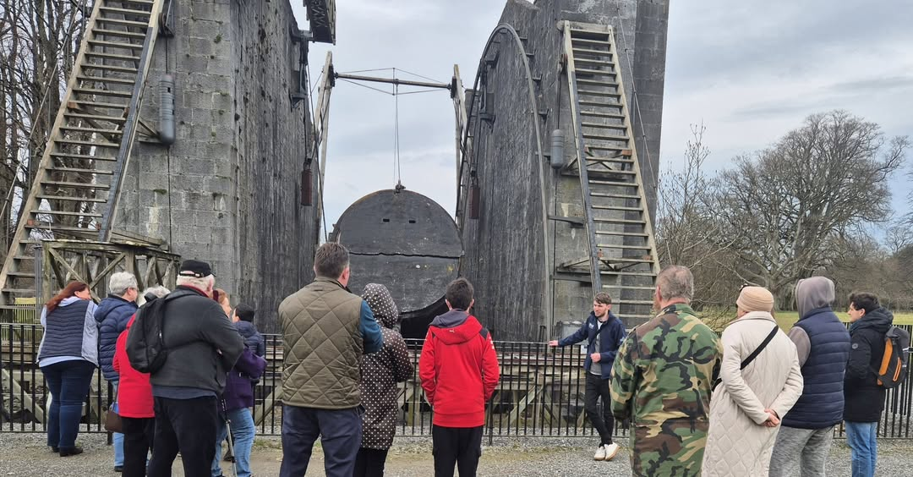
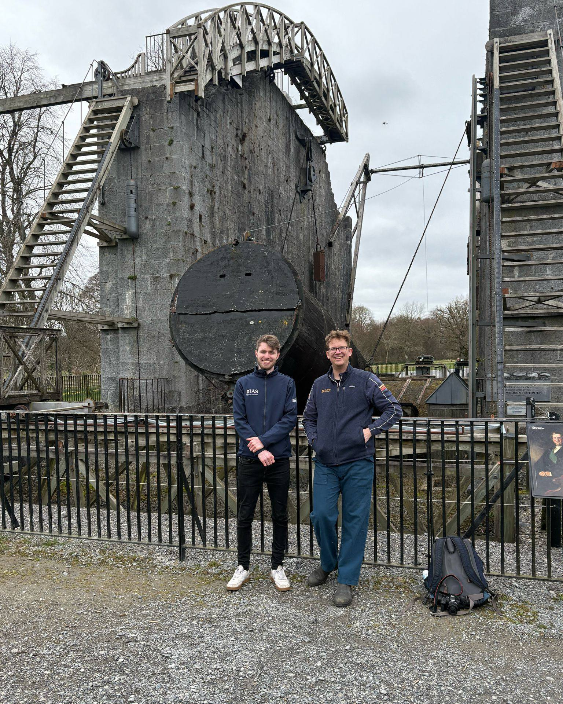
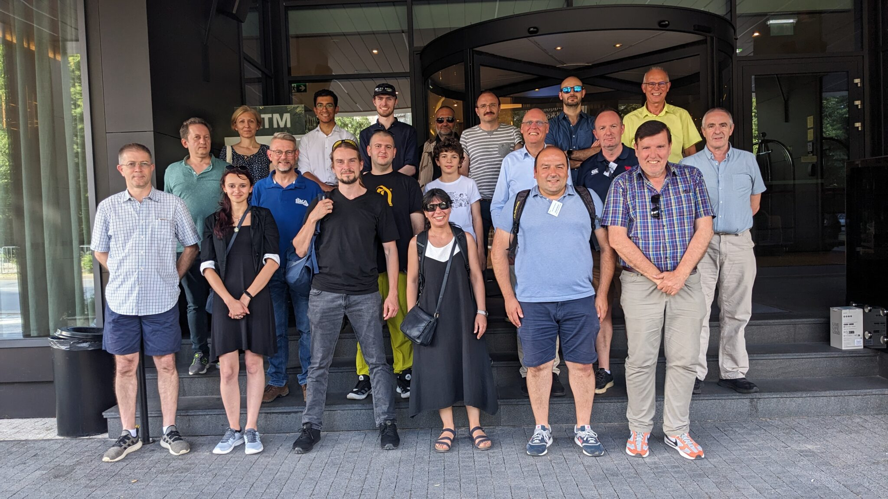
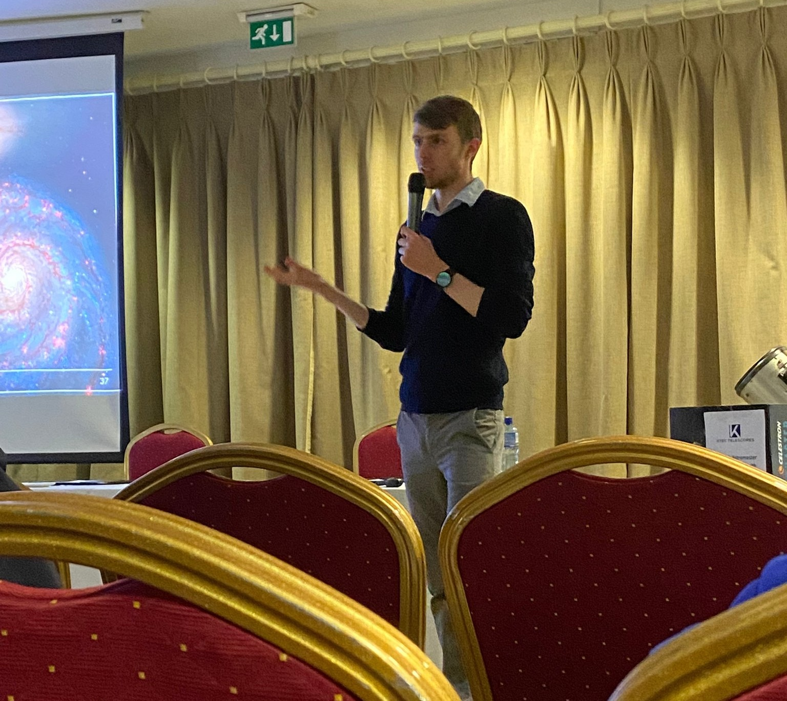

Public Speaking
Throughout my academic journey, particularly during my PhD, I have been deeply involved in science communication, sharing my research and expertise with a wide range of audiences. I have presented at professional conferences, delivered invited seminars, and given engaging talks to astronomical societies, as well as to college and professional groups. These experiences have allowed me to communicate complex scientific ideas effectively to diverse audiences, from experts in the field to members of the general public. Having spoken to thousands of people in various settings, I have developed the ability to tailor my presentations to different levels of expertise, ensuring clarity and accessibility while maintaining scientific rigor.
My dedication to public speaking and science communication has been recognized through several prestigious awards. In 2022, I received the Peter Curran Award for Best Postgraduate Presentation at the Irish National Astronomy Meeting. In 2024, I was honored with the Rosse Medal for Best Postgraduate Presentation at the Institute of Physics Ireland Spring Conference, which qualified me for the IOP Three Minute Wonder UK and Ireland Final at the historic Royal Institution in London. At this competition, I was delighted to win the Audience Vote Award for my presentation.
Below, you will find a selection of my past presentations and talks. If you are interested in booking me for a speaking engagement or would like to learn more, please click here to access my contact information and social media.
- >55 Appearances
- >3000 Audience Reached
- 6 Countries
- 3 Awards
Upcoming Techincal University of Galway Astronomy Society
May 2025 - Birr Castle Demesne, Ireland
Education and Public Engagment
 This tour for the University of Galway Astronomy Society will explore the history of astronomy at Birr Castle Demesne. The Irish LOw Frequency ARray (I-LOFAR) will be in detail, highlighting country-wide and international research collaborations.
This tour for the University of Galway Astronomy Society will explore the history of astronomy at Birr Castle Demesne. The Irish LOw Frequency ARray (I-LOFAR) will be in detail, highlighting country-wide and international research collaborations.
University of Galway Astronomy Society
April 2025 - Birr Castle Demesne, Ireland
Education and Public Engagment
This tour for the University of Galway Astronomy Society explored the history of astronomy at Birr Castle Demesne. The Irish LOw Frequency ARray (I-LOFAR) was discussed in detail, highlighting countrywide and international research collaborations.
LFI Dublin
April 2025 - Birr Castle Demesne, Ireland
Education and Public Engagment
Students from the Lycée Français International Samuel Beckett (LFI) school attended the demesne, exploring the history of astronomy at Birr Castle Demesne, from the Leviathan to I-LOFAR.
Eclipse Observing at Birr Castle
March 29, 2025 - Birr Castle Demesne, Ireland
Education and Public Engagment
 Join Birr Castle for a stunning partial solar eclipse viewing this Saturday morning! Dr. Jeremy Rigney will guide you through the experience with a telescope (please note, you will not be viewing through the Great Leviathan Telescope). This event is included in the general admission price and is free for Friends of Birr Castle Demesne. General admission tickets can be pre-booked or paid for on the day.
Hank Green Visit to Birr Castle
March 2025 - Birr Castle Demesne, Ireland
Private Tour
Famous Science Communicator and novelist Hank Green stopped by Birr as part of his visit to Ireland. Hank had previously made a video on the Leviathan of Parsonstown. I provided a private tour for him and his family, detailing the history of astronomy at Birr.
Irish Astronomy Week "Walk and Talk" Tours
March 2025 - Birr Castle Demesne, Ireland
Education and Public Engagment
 I gave two tours as part of Irish Astronomy Week, titled “Leviathan to LOFAR Walk and Talk" at Birr Castle Demesne.
This guided tour explored the rich astronomical heritage of Birr, from the historic 19th-century Leviathan telescope to the cutting-edge 21st-century I-LOFAR radio telescope. I covered the engineering marvels of the Leviathan, once the world’s largest telescope, and the groundbreaking research conducted at I-LOFAR, highlighting Ireland’s pivotal role in the future of radio astronomy.
I gave two tours as part of Irish Astronomy Week, titled “Leviathan to LOFAR Walk and Talk" at Birr Castle Demesne.
This guided tour explored the rich astronomical heritage of Birr, from the historic 19th-century Leviathan telescope to the cutting-edge 21st-century I-LOFAR radio telescope. I covered the engineering marvels of the Leviathan, once the world’s largest telescope, and the groundbreaking research conducted at I-LOFAR, highlighting Ireland’s pivotal role in the future of radio astronomy.
IAU Symposium 388: Solar and Stellar Coronal Mass Ejections
May 2024 - Krakow, Poland
Academic | Science Meeting
I had the opportunity to attend the 388th IAU Symposium in Poland in mid-2024. I was accepted for a poster presentation for my research examining a solar flare and corresponding shockwave. The conference took place over five days in the culture-rich city of Krakow. Over 150 attendees participated in talks, breakout sessions and poster presntations thoughout. I had excellent discussions with leaders in the field of solar physics and space weather.
Pint of Science Birr 2024 - Organiser and Host
May 2024 - Birr, Ireland
Education and Public Engagment
 Pint of Science aims to bring local science to a local audience in the fun and relaxing environment of a local pub! I led the organisation of a Pint of Science event in the Chestnut Pub in Birr, Ireland in 2024. Three speakers were recruited to talk on a wide range of topics from black holes, radio astronomy and coffee as a treatment for dementia to local ecology and biodiversity. I acted as the host for the evening, with introductions for each of the speakers and a fun pub quiz for the audience with questions related to each of the speaker topics. It was an ecxceelent opportunity to engage with a cohort of the general public who may not be comfortable attending more traditional, formal public science events!
Pint of Science aims to bring local science to a local audience in the fun and relaxing environment of a local pub! I led the organisation of a Pint of Science event in the Chestnut Pub in Birr, Ireland in 2024. Three speakers were recruited to talk on a wide range of topics from black holes, radio astronomy and coffee as a treatment for dementia to local ecology and biodiversity. I acted as the host for the evening, with introductions for each of the speakers and a fun pub quiz for the audience with questions related to each of the speaker topics. It was an ecxceelent opportunity to engage with a cohort of the general public who may not be comfortable attending more traditional, formal public science events!
Institute of Physics Three Minute Wonder Final
April 2024 - London, UK
Education and Public Engagment
Having won the best postgraduate presentation at the IOP Spring conference in March, I qualified for the final of the Three Minute Wonder competition. Three Minute Wonder is an IOP competition run yearly across Ireland and the UK. The aim is to present a research topic to a general audience in three minutes, with only one slide and the option of using props. The final was held in the historic Theatre at the Royal Institution. 8 finalists from across the UK and Ireland presented our research to the full auditorium. My presentation won the Audience Vote Award, chosen by the over 200 members of the public in attendance. It was an incredible end to a brilliant competition.
Institute of Physics Ireland Spring Conference
March 2024 - Dublin, Ireland
Education and Public Engagment
The 2024 Institute of Physics Ireland Spring Conference was the annual gathering for members of the physics community. Celebrating 60 years of the IOP Ireland Committee, it explored the theme "Past, Present & Future." The event featured invited talks, networking opportunities, and an evening dinner. It also hosted the prestigious Rosse Medal competition, which I won for my presentation on solar physics research.
Invited Seminar
October 2023 - Armagh, Northern Ireland
Academic | Science Meeting

Irish National Astronomy Meeting
August 2023 - Cork, Ireland
Academic | Science Meeting

STELLAR Project Final Conference
July 2023 - Plovdiv, Bulgaria
Academic | Science Meeting

STELLAR Science School
May 2023 - Sofia, Bulgaria
Academic | Science Meeting
Irish Astronomical Society Invited Public Talk
March 2023 - University College Dublin, Ireland
Education and Public Engagment
Irish Astronomical Association Invited Talk Series
March 2023 - Queen's University Belfast, Northern Ireland
Education and Public Engagment
Invited Seminar, Institute of Astronomy of the Bulgarian Academy of Sciences
January 2023 - Sofia, Bulgaria
Academic | Science Meeting
University of Limerick Physics Society
January 2023 - I-LOFAR, Birr, Ireland
Education and Public Engagment
Atlantic Technological University Undergraduate Physics
January 2023 - I-LOFAR, Birr, Ireland
Education and Public Engagment
Invited Speaker at Astrofest - Galway Astronomical Society
January 2023 - Galway, Ireland
Education and Public Engagment

TESS Science Team Meeting Invited Presentation
October 2022 - Massachusetts, USA
Academic | Science Meeting
See a recording of my presentation at the Transiting Exoplanet Survey Satellite 2022 Team Meeting #29 by clicking here. I was invited by the TESS Science Director to present my research at the meeting, within which I participated in the "Contributed papers on exoplanet science" section.
Planetary, Solar, and Heliospheric Radio Emissions Conference
September 2022 - Dublin, Ireland
Academic | Science Meeting
Irish National Astronomy Meeting
August 2022 - DIAS Dunsink Observatory, Dublin, Ireland
Academic | Science Meeting
 I was presented with the Peter Curran Award for best postgraduate presentation.
I was presented with the Peter Curran Award for best postgraduate presentation.
CoolStars21 Conference
July 2022 - Toulouse, France
Academic | Science Meeting
 Specialist conference on stellar astrophysics hosted at the Pierre Baudis Conference Centre from the 4th - 9th July. I presented my research on stellar flares during the 'Solar and stellar coronal mass ejections' session and fielded questions from the audience. Attending the conference was an amazing opportunity to meet researchers from across the world.
Specialist conference on stellar astrophysics hosted at the Pierre Baudis Conference Centre from the 4th - 9th July. I presented my research on stellar flares during the 'Solar and stellar coronal mass ejections' session and fielded questions from the audience. Attending the conference was an amazing opportunity to meet researchers from across the world.
University College Cork Astronomy Society
June 2022 - I-LOFAR, Birr, Ireland
Education and Public Engagment
Maynooth University Undergraduate Physics
April 2022 - I-LOFAR, Birr, Ireland
Education and Public Engagment
University of Galway Undergraduate Physics
April 2022 - I-LOFAR, Birr, Ireland
Education and Public Engagment
The Universe at Radio Wavelengths
STFC Introductory Course in Solar and Solar-Terrestrial Physics
August 2021 - University of Warwick, United Kingdom
Academic | Science Meeting
https://www.uksolphys.org/summer-schools/stfc-introductory-course-in-solar-and-solar-terrestrial-physics-2021%E2%80%A8/
ASKAP-MeerKAT Telescope Consortium Meeting
April 2021 - Online (Australia & South Africa)
Academic | Science Meeting